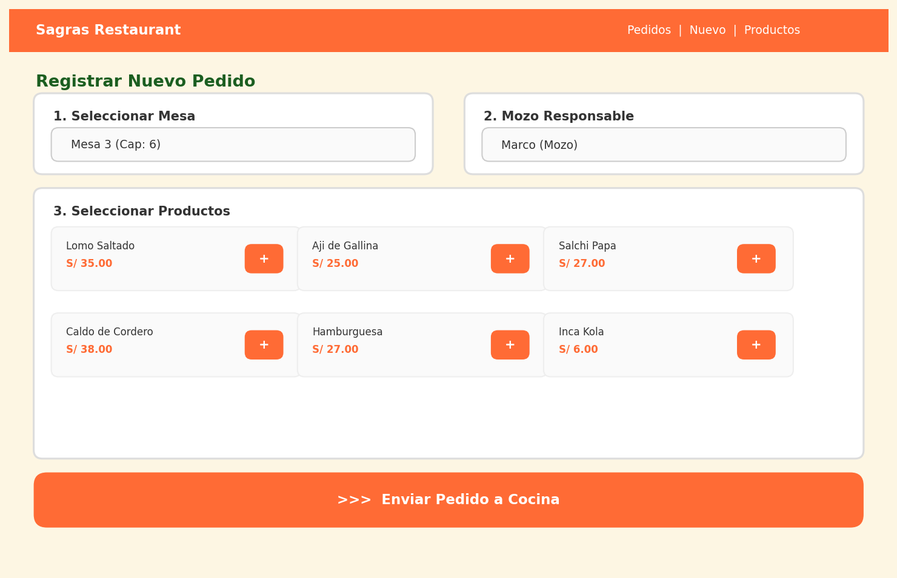
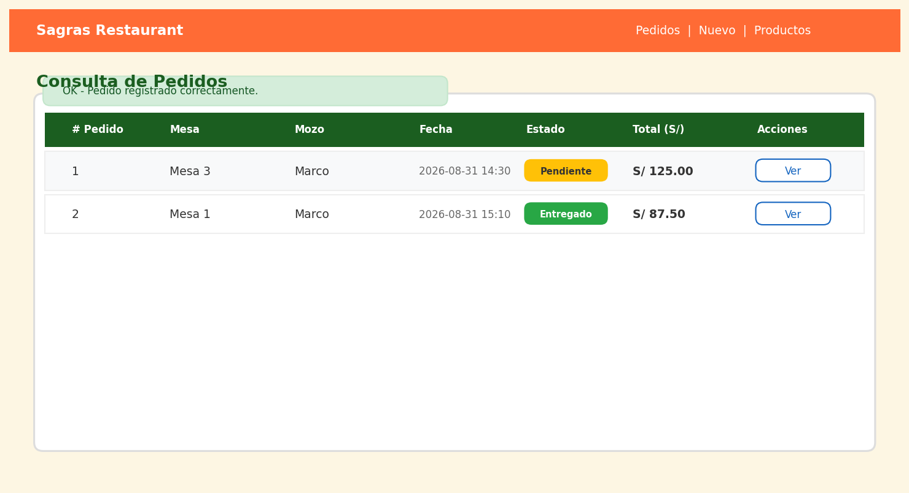
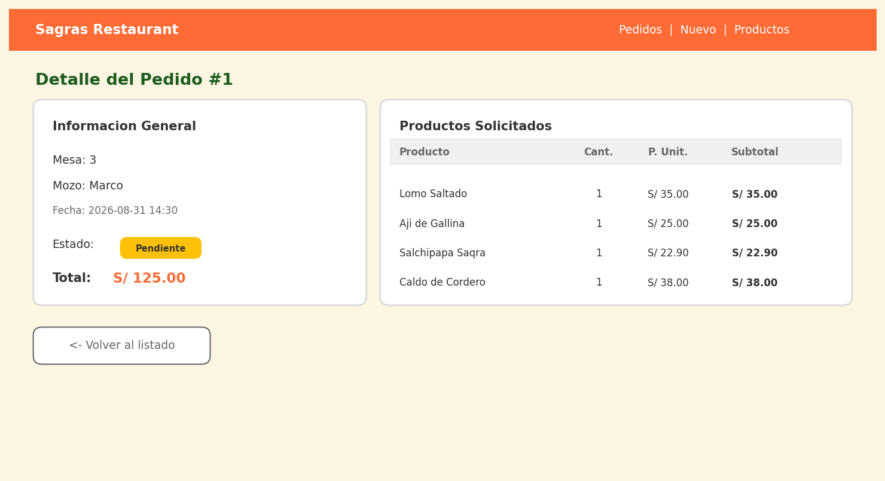
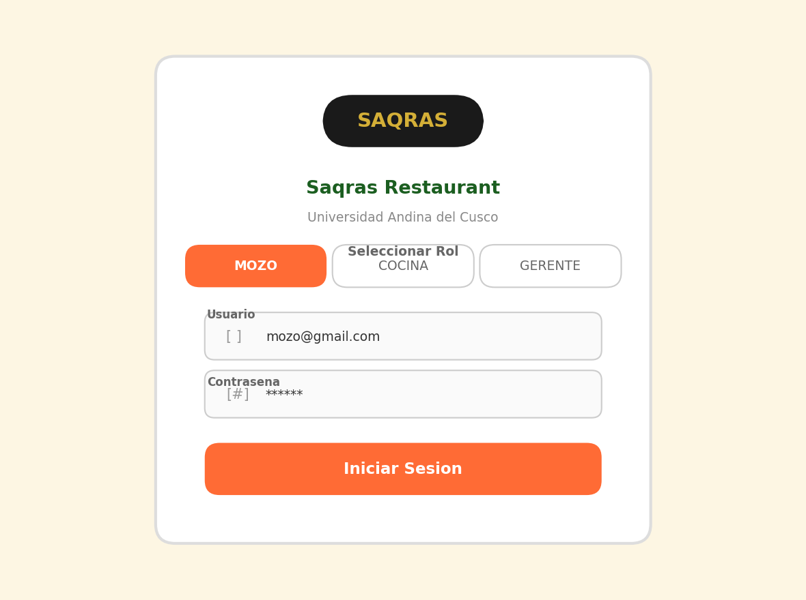
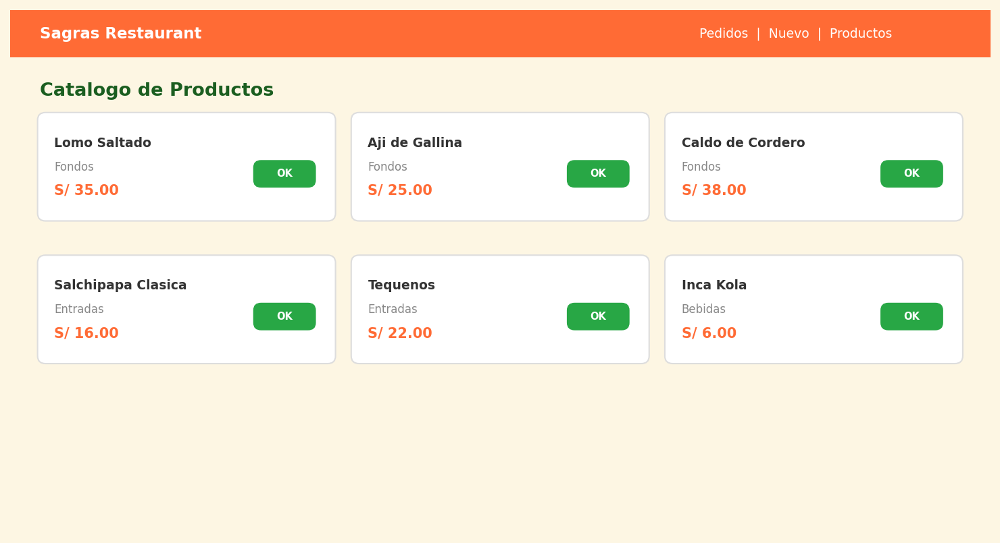
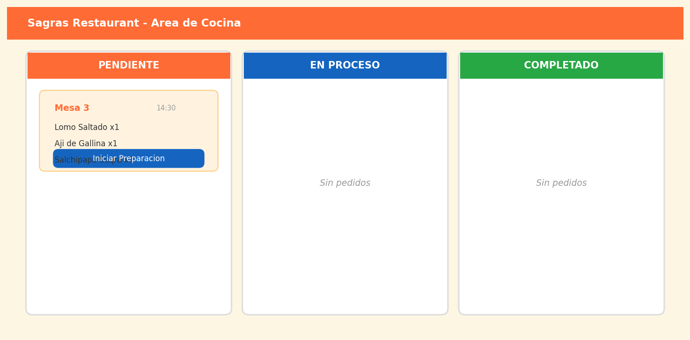

El servidor de desarrollo de CodeIgniter 4 se levanta correctamente en http://localhost:8080
ESTADO: Funcionando
Las carpetas Models/, Views/ y Controllers/ están separadas y comunican entre sí.
ESTADO: Verificado
Módulos: Autenticacion, Mesas, Pedidos, Productos, Cocina. Cada uno con su Modelo, Controlador y Vista.
ESTADO: Documentado en README.md
Rutas personalizadas: /pedidos, /pedidos/nuevo, /pedidos/registrar, /pedidos/ver/1
ESTADO: 4 rutas + 1 controlador + 3 vistas funcionando
Archivo .env con conexion a MySQL, URL base y seguridad CSRF configurados.
ESTADO: Configurado
Diagrama MVC incluido en el proyecto: diagrama_arquitectura_mvc.png
ESTADO: Generado
8 entidades: Usuario, Mesa, Categoria, Producto, Pedido, Detalle_Pedido, Pago, Preparacion.
ESTADO: Normalizado a 3FN
Script sagras_db.sql crea la base de datos con tablas, claves y datos de prueba.
ESTADO: Importable en MySQL
pedido, detalle_pedido, mesa, producto, usuario, preparacion (todas con datos de prueba).
ESTADO: 6 tablas con datos
PK en todas las tablas, 6 FK con ON DELETE/UPDATE, relaciones 1:N, N:M y 1:1.
ESTADO: Integridad referencial activa
PedidoModel.php extiende CodeIgniter\Model con validaciones, timestamps y metodos JOIN.
ESTADO: Implementado
Formulario web que crea pedido + detalles + preparacion en transaccion SQL.
Pantalla: Formulario de registro

Resultado: Pedido registrado

ESTADO: Funcionando - URL: /pedidos/nuevo
Listado de pedidos con JOIN a mesa y usuario. Detalle individual por ID.
Pantalla: Lista de pedidos
Pantalla: Detalle del pedido

ESTADO: Funcionando - URLs: /pedidos, /pedidos/ver/1
Transacciones SQL (transStart/transComplete) + datos de prueba que persisten tras reinicio.
ESTADO: Comprobada
README.md completo + este documento + codigo fuente listo para subir a GitHub.
ESTADO: Listo para publicar
Login de usuarios

Catalogo de productos

Panel de cocina
